费用包含：
- 1、2晚金巴兰四季-单卧室独栋私人泳池别墅+2晚山妍四季-单卧室独栋泳池别墅；
- 2、含双人每日自助早餐；
- 3、含广州/香港往返直飞-巴厘岛-经济舱往返含税；
- 4、含印尼离境税；
- 5、含往返四季度假村专车专属接送机服务；
- 6、含换酒店交通四季专车用车服务一次；
怀着一颗期待已久的喜悦心情前往机场，飞往集东南亚《神话?艺术?梦幻?乐园》于一身的南洋岛国-【巴厘岛】，随着飞机穿越朵朵重云而缓缓下降，心情更是不由自主的high了起来!抵达后入住酒店。
酒店内享用早餐
中餐：敬请自理
晚餐：（推荐）Pundi Pundi餐厅 脏鸭子餐
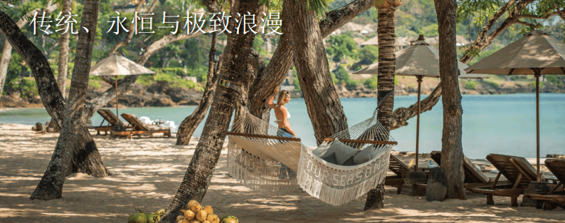 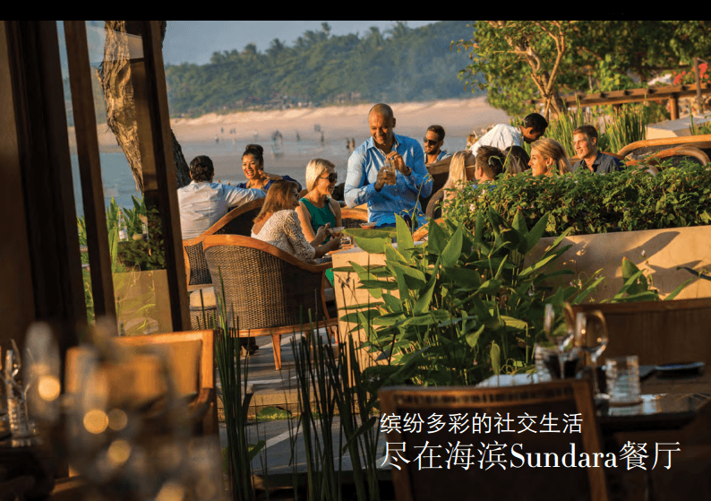 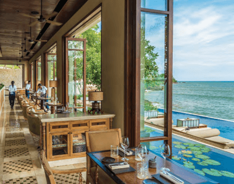 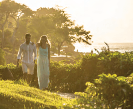
南湾位于巴厘岛最南端，是努沙杜瓦区潜水和水上活动的主要区域。可供游客大玩特玩的水上活动种类之多，可称世界之冠。包括全世界最新颖的“飞鱼”、“火箭”、“拖曳伞”、“水上摩托车”、“香蕉船”、“独木舟”、“滑水”、“舢舨”和“帆船”等活动，可谓一应俱全。还可以乘船出海，观赏海景。要是累了就搭乘玻璃底船前往海龟岛，悠哉地喂食海中成群的各色热带鱼，船底下瑰丽多彩的珊瑚礁群也清晰可见。南湾对岸的海龟岛上有许多海龟、蜥蜴、蝙蝠、巨蟒，游客可以拍照留念。
上午睡到自然醒。午餐后推荐前往巴厘岛最南端的—南湾，此地是巴厘岛水上活动的主要区域。在这里可以参加拖曳伞、水上摩托车、香蕉船等活动，还可以乘船出海，观赏海景。随后推荐您前往金巴兰四季酒店下午茶（Four Season Jimbaran），位于金巴兰湾的悬崖上，独特的悬崖海景是巴厘岛的代表美景之一。随后推荐您前往金巴兰海滩，在这里一边欣赏落日一边品尝当地的海鲜烧烤。
酒店内享用早餐
中餐：敬请自理
晚餐：敬请自理
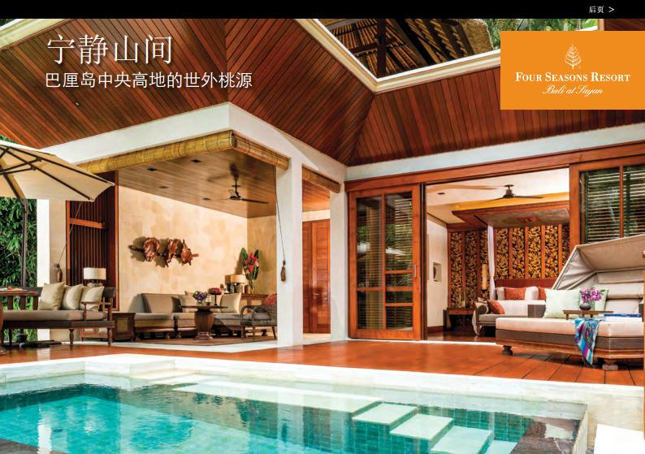 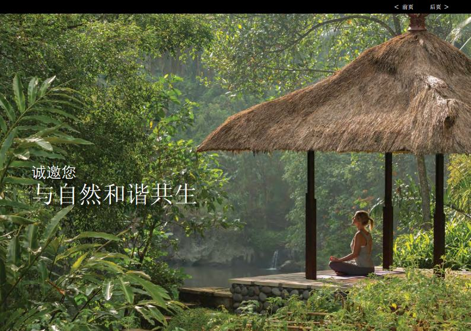 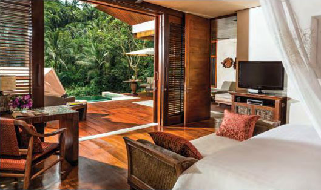 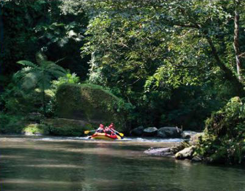
巴厘岛山妍四季度假酒店掩映在巴厘岛的中央高地之中——距离文化与艺术之都乌布仅咫尺之遥——四季酒店欢迎您体验神圣的爱咏河畔的绿色河谷。
这里被誉为创新设计之传奇，仅有60个超私密的别墅与套间——为您呈现近距离的河景、梯田与热带花园的胜景。品尝地道的传统印尼佳肴，体验原汁原味的当地文化，享受久负盛名的巴厘岛风格水疗。
与当地农民学种水稻。
与山妍周边村落的村民聚会，或在乌布的各种精品店购物，这些精品店以经营绘画、手工艺品与银器而著称。巴厘岛山妍四季度假酒店带您体验真正的巴厘岛文化。
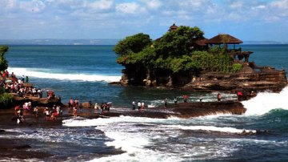 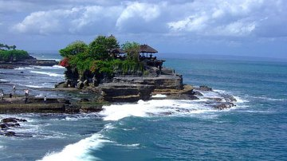 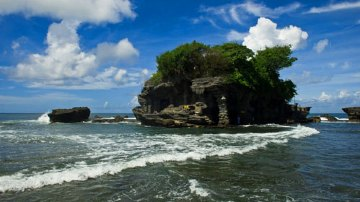 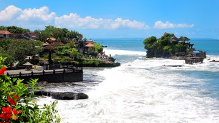
酒店内享用早餐
中餐：敬请自理
晚餐：（推荐）Pundi Pundi餐厅 脏鸭子餐
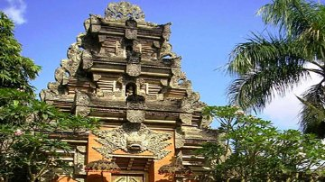 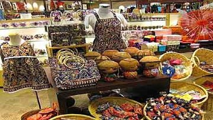 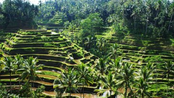 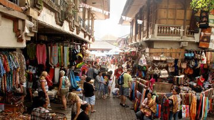
自由活动
上午自由活动.午餐后推荐您前往巴厘岛三大神庙之一的--海神庙。海神庙每逢潮涨之时岩石被海水包围，整座寺庙就与陆地隔绝，孤零零地矗立在海水中，景观十分奇特，景区里的各种雕塑都十分精美，值得观赏。午餐后推荐您前往充满艺术文化气息的乌布。（来到乌布不得不去感受一下当地文化交流地-乌布传统市场；乌布市场位于乌布市中心，乌布皇宫正对面。周围的jalan raya ubud、jalan hanoman、以及monkey forest 三条路上聚集了各式的商店，是乌布的精华区，人多嘈杂，各式货品都有， 例如银器，木雕，编织，各式蔬果、衣服、沙龙、皮件、鞋子及纪念品，乐器等等。店面多，选择性高，议价空间也大，是贴近当地生活并满足购物欲望的圣地。）随后推荐您前往著名的Pundi Pundi餐厅享用巴里岛著名的Dirty Duck脏鸭子餐。
酒店内享用早餐
中餐：敬请自理
晚餐：敬请自理（推荐KUTA区域）
中午12点退房，下午推荐您前往The Banjar Spa,随后可在KUTA用晚餐。晚上飞机返回。
景点介绍：
【巴厘岛The Banjar Spa】SPA一字原文为「Solus Por Aqua」，Solus指健康，Por是经由，而Aqua代表水。所以SPA的意思是指经由水而获得健康。近来更演变成一种集养生、美容、休闲于一身的代名词，一种能洗涤人们身、心、灵的五感享受。
The Banjar Spa尊贵级别的巴厘岛SPA享受！?巴厘岛最大的Spa馆之一！ ?库塔区最好的Spa馆！
早上抵达，结束愉快的巴厘岛之旅！
入住巴厘岛四季金巴兰酒店私人独栋泳池别墅
南湾+ 下午茶+金巴兰海滩烧烤
入住四季山研
海神庙+乌布市场
山研SPA，退房
早上抵达，回到温暖的家